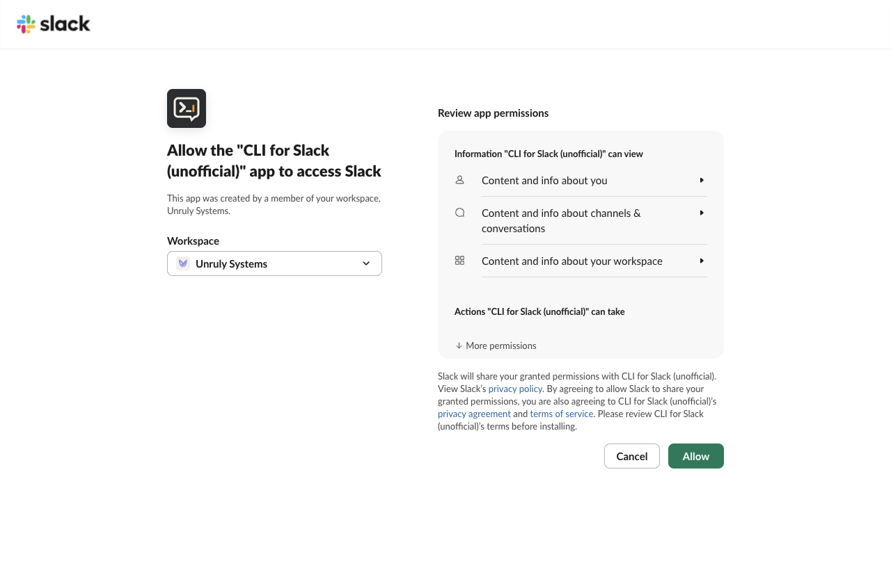
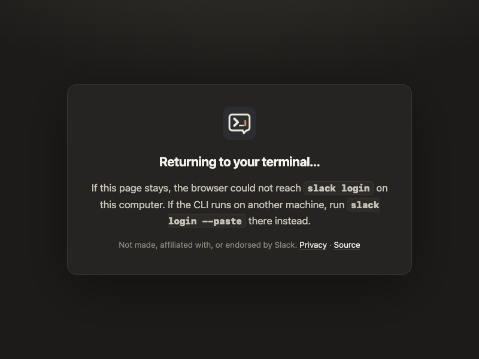
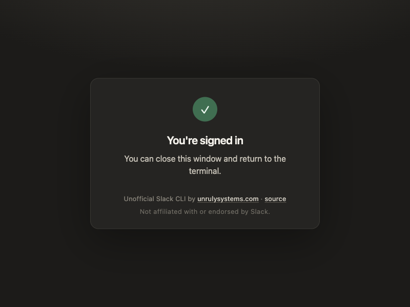
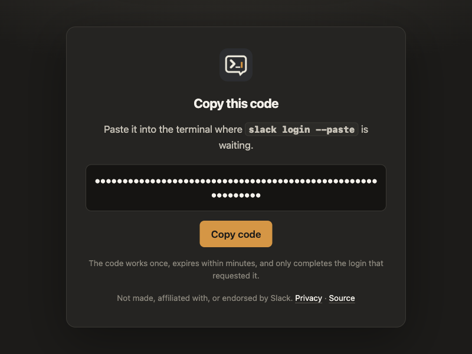
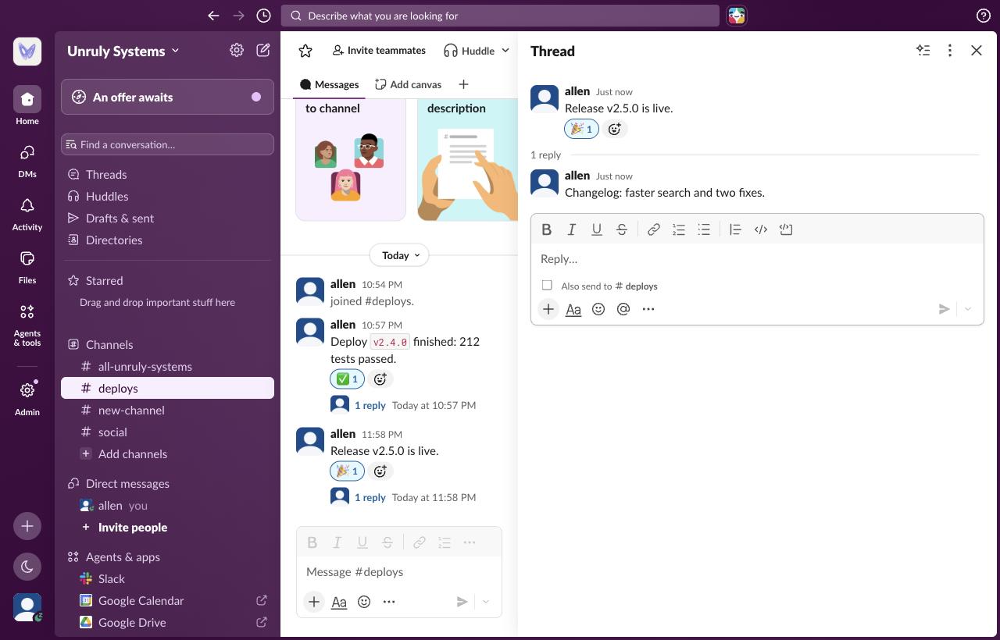

Installing the CLI, signing in with Slack, and using it, captured from a real session with version 0.2.0 in a test workspace.
The CLI is an npm package and needs Node.js 22 or later. There is no account to create.
$ npm install --global @alleneubank/slack-cli added 13 packages in 1s $ slack --version 0.2.0
slack login opens Slack's consent page in the browser. Plain
slack login asks only for read access; --write also asks to post,
react, and upload.
$ slack login --write
Authorize Slack:
https://slack.com/oauth/v2_user/authorize?response_type=code&client_id=12085301315143.12095834471045&redirect_uri=https%3A%2F%2Falleneubank.github.io%2Fslack-cli%2Fcallback%2F&…

Slack redirects to this site's
sign-in page, a static page that hands the one-time code to the
CLI listening on 127.0.0.1. The code is useless without the PKCE verifier,
which never leaves the computer, and the app has no client secret.


ok: true
teamId: T0C2H8V9947
teamName: Unruly Systems
scopes[31]: "channels:history","groups:history","im:history","mpim:history",…
$ slack auth test --filter-output ok,team,user
ok: true
team: Unruly Systems
user: allen
When the CLI runs on a machine the browser cannot reach, slack login --paste
makes the sign-in page show the code instead, and the terminal reads it.

$ slack login --paste Authorize Slack: https://slack.com/oauth/v2_user/authorize?… Paste the code shown in the browser: (code from the page) ok: true teamId: T0C2H8V9947 teamName: Unruly Systems
Every Slack Web API method the user's token can call is a command: method
a.b.c is slack a b c. Output is Slack's own response, optionally
filtered to the fields you need.
$ slack conversations list --types public_channel --limit 5 --filter-output 'channels[].name'
channels[4]{name}:
all-unruly-systems
social
deploys
new-channel
Writes can be previewed with --dry-run, which sends nothing:
$ slack chat postMessage C0C2W4H7DAR --text 'Release v2.5.0 is live.' --dry-run
dryRun: true
command: chat postMessage
args:
channel: C0C2W4H7DAR
options:
text: Release v2.5.0 is live.
Post a message, reply in its thread, and react to it:
$ slack chat postMessage C0C2W4H7DAR --text 'Release v2.5.0 is live.' --filter-output ok,ts ok: true ts: "1789793895.690449" $ slack chat postMessage C0C2W4H7DAR --thread_ts 1789793895.690449 \ --text 'Changelog: faster search and two fixes.' --filter-output ok,ts ok: true ts: "1789793896.128299" $ slack reactions add --channel C0C2W4H7DAR --timestamp 1789793895.690449 --name tada ok: true

$ slack conversations history C0C2W4H7DAR --limit 1 \
--filter-output 'messages[0].text,messages[0].reply_count,messages[0].reactions[0].name'
messages[1]:
- text: Release v2.5.0 is live.
reply_count: 1
reactions[1]{name}:
tada
$ slack workspaces list --filter-output 'current,workspaces[0].teamName,workspaces[0].rotating' current: T0C2H8V9947 workspaces[1]{teamName,rotating}: Unruly Systems,false $ slack auth revoke ok: true revoked: true $ slack logout ok: true removed[1]: T0C2H8V9947
slack auth revoke invalidates the token at Slack, and
slack logout deletes it from the computer. Tokens never appear in the CLI's
output.